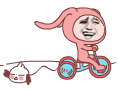

本節の導入：
CanvasのAPIドキュメントには、次のようなメソッドがあります：drawBitmap(Bitmap bitmap, Matrix matrix, Paint paint)
このMatrixはなかなか奥が深いのです。以前、PaintのAPIのColorFilterを学んだ際に、ColorMatrix（カラーマトリックス）について説明しました。これは4 * 5の行列で、行列の値を変更することで色調や彩度などを変更できます。そして今日説明するこのMatrixは、他のAPIと組み合わせて図形やコンポーネントの変形を制御できます。例えば、Canvasには上記のdrawBitmapメソッドがあり、行列変換の効果を実現できます。それでは、これをゆっくり研究していきましょう〜
公式APIドキュメント：Matrix
1.Matrixのよく使われる変換メソッド
- setTranslate(float dx, float dy)：Matrixを平行移動します
- setRotate(float degrees, float px, float py)：回転。引数は順に：回転角度、軸心(x,y)
- setScale(float sx, float sy, float px, float py)：スケーリング。引数は順に：X軸、Y軸のスケール比；スケーリングの軸心
- setSkew(float kx, float ky)：スキュー(歪み)。引数は順に：X軸、Y軸のスケール比
実はCanvasの変換メソッドとほぼ同じです。Matrixに上記の変換を設定した後、CanvasのdrawBitmap()メソッドを呼び出す際にその行列を使えばよいのです〜
2.Matrixの使用例：
実行結果のスクリーンショット：

コード実装：
MyView.java：
/**
* Created by Jay on 2015/11/11 0011.
*/
public class MyView extends View {
private Bitmap mBitmap;
private Matrix matrix = new Matrix();
private float sx = 0.0f; //设置倾斜度
private int width,height; //位图宽高
private float scale = 1.0f; //缩放比例
private int method = 0;
public MyView(Context context) {
this(context, null);
}
public MyView(Context context, AttributeSet attrs) {
super(context, attrs);
init();
}
public MyView(Context context, AttributeSet attrs, int defStyleAttr) {
super(context, attrs, defStyleAttr);
}
private void init() {
mBitmap = BitmapFactory.decodeResource(getResources(), R.mipmap.img_meizi);
width = mBitmap.getWidth();
height = mBitmap.getHeight();
}
@Override
protected void onDraw(Canvas canvas) {
super.onDraw(canvas);
switch (method){
case 0:
matrix.reset();
break;
case 1:
sx += 0.1;
matrix.setSkew(sx,0);
break;
case 2:
sx -= 0.1;
matrix.setSkew(sx,0);
break;
case 3:
if(scale < 2.0){
scale += 0.1;
}
matrix.setScale(scale,scale);
break;
case 4:
if(scale > 0.5){
scale -= 0.1;
}
matrix.setScale(scale,scale);
break;
}
//根据原始位图与Matrix创建新图片
Bitmap bitmap = Bitmap.createBitmap(mBitmap,0,0,width,height,matrix,true);
canvas.drawBitmap(bitmap,matrix,null); //绘制新位图
}
public void setMethod(int i){
method = i;
postInvalidate();
}
}
レイアウトコード：activity_main.xml：
<RelativeLayout xmlns:android="http://schemas.android.com/apk/res/android"
android:layout_width="match_parent"
android:layout_height="match_parent">
<LinearLayout
android:id="@+id/ly_bar"
android:layout_width="match_parent"
android:layout_height="64dp"
android:layout_alignParentBottom="true">
<Button
android:id="@+id/btn_reset"
android:layout_width="0dp"
android:layout_height="match_parent"
android:layout_weight="1"
android:text="重置" />
<Button
android:id="@+id/btn_left"
android:layout_width="0dp"
android:layout_height="match_parent"
android:layout_weight="1"
android:text="左倾" />
<Button
android:id="@+id/btn_right"
android:layout_width="0dp"
android:layout_height="match_parent"
android:layout_weight="1"
android:text="右倾" />
<Button
android:id="@+id/btn_zoomin"
android:layout_width="0dp"
android:layout_height="match_parent"
android:layout_weight="1"
android:text="放大" />
<Button
android:id="@+id/btn_zoomout"
android:layout_width="0dp"
android:layout_height="match_parent"
android:layout_weight="1"
android:text="缩小" />
</LinearLayout>
<com.jay.canvasdemo3.MyView
android:id="@+id/myView"
android:layout_width="match_parent"
android:layout_height="match_parent"
android:layout_above="@id/ly_bar" />
</RelativeLayout>
MainActivity.java：
public class MainActivity extends AppCompatActivity implements View.OnClickListener{
private Button btn_reset;
private Button btn_left;
private Button btn_right;
private Button btn_zoomin;
private Button btn_zoomout;
private MyView myView;
@Override
protected void onCreate(Bundle savedInstanceState) {
super.onCreate(savedInstanceState);
setContentView(R.layout.activity_main);
bindViews();
}
private void bindViews() {
btn_reset = (Button) findViewById(R.id.btn_reset);
btn_left = (Button) findViewById(R.id.btn_left);
btn_right = (Button) findViewById(R.id.btn_right);
btn_zoomin = (Button) findViewById(R.id.btn_zoomin);
btn_zoomout = (Button) findViewById(R.id.btn_zoomout);
myView = (MyView) findViewById(R.id.myView);
btn_reset.setOnClickListener(this);
btn_left.setOnClickListener(this);
btn_right.setOnClickListener(this);
btn_zoomin.setOnClickListener(this);
btn_zoomout.setOnClickListener(this);
}
@Override
public void onClick(View v) {
switch (v.getId()){
case R.id.btn_reset:
myView.setMethod(0);
break;
case R.id.btn_left:
myView.setMethod(1);
break;
case R.id.btn_right:
myView.setMethod(2);
break;
case R.id.btn_zoomin:
myView.setMethod(3);
break;
case R.id.btn_zoomout:
myView.setMethod(4);
break;
}
}
}
使い方は非常に簡単なので、説明は省略します〜
3.drawBitmapMeshによる画像の歪み
APIドキュメントには、次のようなメソッドもあります：drawBitmapMesh(Bitmap bitmap, int meshWidth, int meshHeight, float[] verts, int vertOffset, int[] colors, int colorOffset, Paint paint)
引数は順に：
bitmap：歪める対象の元ビットマップ
meshWidth/meshHeight：横/縦方向に元のビットマップをいくつのグリッドに分割するか
verts：長さが(meshWidth+1)*(meshHeight+2)の配列。歪んだ後のビットマップの各頂点（グリッド線の交点）の位置を記録します。1次元配列ですが、実際に記録されるデータは(x0,y0)、(x1,y1)..(xN,Yn)のような形式のデータです。これらの配列要素はbitmapビットマップの歪み効果を制御します。
vertOffset：verts配列の何番目の要素からbitmapの歪みを開始するかを制御します（verOffsetより前のデータの歪み効果を無視します）

コード例：
実行結果のスクリーンショット：

コード実装：
/**
* Created by Jay on 2015/11/11 0011.
*/
public class MyView extends View {
//将水平和竖直方向上都划分为20格
private final int WIDTH = 20;
private final int HEIGHT = 20;
private final int COUNT = (WIDTH + 1) * (HEIGHT + 1); //记录该图片包含21*21个点
private final float[] verts = new float[COUNT * 2]; //扭曲前21*21个点的坐标
private final float[] orig = new float[COUNT * 2]; //扭曲后21*21个点的坐标
private Bitmap mBitmap;
private float bH,bW;
public MyView(Context context) {
this(context, null);
}
public MyView(Context context, AttributeSet attrs) {
super(context, attrs);
init();
}
public MyView(Context context, AttributeSet attrs, int defStyleAttr) {
super(context, attrs, defStyleAttr);
}
private void init() {
mBitmap = BitmapFactory.decodeResource(getResources(), R.mipmap.img_wuliao);
bH = mBitmap.getWidth();
bW = mBitmap.getHeight();
int index = 0;
//初始化orig和verts数组。
for (int y = 0; y <= HEIGHT; y++)
{
float fy = bH * y / HEIGHT;
for (int x = 0; x <= WIDTH; x++)
{
float fx = bW * x / WIDTH;
orig[index * 2 + 0] = verts[index * 2 + 0] = fx;
orig[index * 2 + 1] = verts[index * 2 + 1] = fy;
index += 1;
}
}
//设置背景色
setBackgroundColor(Color.WHITE);
}
@Override
protected void onDraw(Canvas canvas) {
canvas.drawBitmapMesh(mBitmap, WIDTH, HEIGHT, verts
, 0, null, 0, null);
}
//工具方法，用于根据触摸事件的位置计算verts数组里各元素的值
private void warp(float cx, float cy)
{
for (int i = 0; i < COUNT * 2; i += 2)
{
float dx = cx - orig[i + 0];
float dy = cy - orig[i + 1];
float dd = dx * dx + dy * dy;
//计算每个座标点与当前点（cx、cy）之间的距离
float d = (float)Math.sqrt(dd);
//计算扭曲度，距离当前点（cx、cy）越远，扭曲度越小
float pull = 80000 / ((float) (dd * d));
//对verts数组（保存bitmap上21 * 21个点经过扭曲后的座标）重新赋值
if (pull >= 1)
{
verts[i + 0] = cx;
verts[i + 1] = cy;
}
else
{
//控制各顶点向触摸事件发生点偏移
verts[i + 0] = orig[i + 0] + dx * pull;
verts[i + 1] = orig[i + 1] + dy * pull;
}
}
//通知View组件重绘
invalidate();
}
@Override
public boolean onTouchEvent(MotionEvent event)
{
//调用warp方法根据触摸屏事件的座标点来扭曲verts数组
warp(event.getX(), event.getY());
return true;
}
}
実装手順の分析：
まず、このverts配列が何を格納しているのかを明確にする必要があります。例えばverts1、この2つの隣接する要素は、実際には最初の点のx座標とy座標を表しています！このことを理解すれば、なぜ21 * 21個の点があるのか、そしてなぜ配列の長さがその値 * 2になるのかが分かります！初期化部分も理解できるでしょう！
次に、タッチイベントに基づいてverts配列の要素の値を計算する実装を見てみましょう：タッチ点のx,y座標を取得し、その値から対応する点のx,y値を引いて、タッチ点と各座標点の距離を計算します。そして、いわゆる歪み度を計算します：80000 / ((float) (dd * d))。歪み度が1以上の場合は、その座標点を直接このタッチ点に向けます。1未満の場合は、各頂点をタッチ点に向かってオフセットさせ、その後invalidate()を呼び出して再描画します。大体そんな感じです。じっくり考えてみてください。それでも理解できなければ、それでいいです。こういうものがあると知っていれば十分です！
4.本節のサンプルダウンロード：
本節のまとめ：
本節の内容の大部分は──李刚著『Android狂熱講義』から抜粋したもので、少し理解しやすくなっているかもしれません。Matrixはたいていの人が理解できるでしょうが、drawBitmapMeshによる画像の歪みは少し時間をかけて消化する必要があるかもしれません。理解できなくても気にすることはありません。では、本節はここまでです。ありがとうございます。

クリックしてノートを共有
<p style="font-size:14px;">ノートは本記事の内容の拡張でなければなりません！</p><br> <p style="font-size:12px;"><a href="../tougao.html" target="_blank">記事投稿はこちらをクリック</a></p> <p style="font-size:14px;"><a href="./runoob-user-test-intro.html" target="_blank">登録招待コードの取得方法</a></p> <h3 class="text-muted"><i class="fa fa-info-circle" aria-hidden="true"></i> ノートを共有する前に<a href=".." class="runoob-pop">ログイン</a>が必要です！</h3> <p><a href="./runoob-user-test-intro.html" target="_blank">登録招待コードの取得方法</a></p>